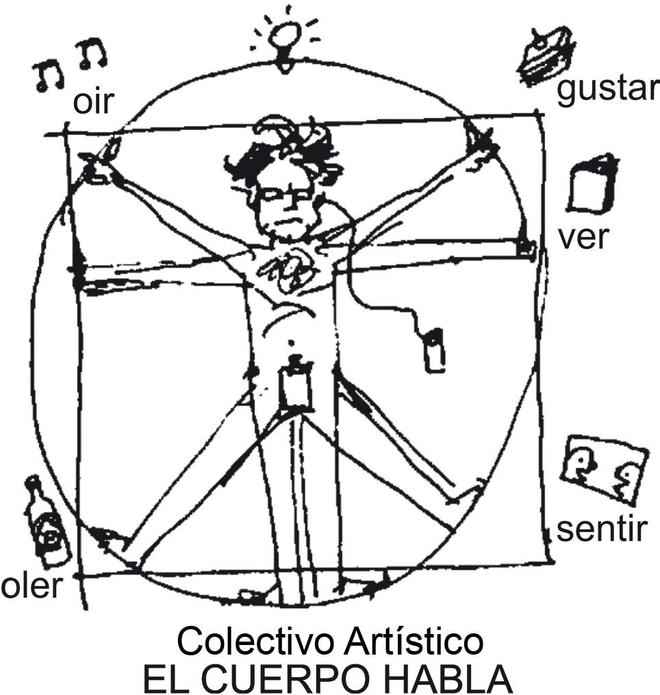

El Cuerpo Habla
La mayoría de los estudios sobre el comportamiento humano en los procesos de interacción, hasta hace nada, se dirigían sobre todo a la comunicación ver-bal. Sin embargo, a comienzos de la década de 1960 se abre un nuevo campo de investigación: la comunicación no verbal. De esta forma, el cuerpo se pre-senta como una estructura lingüística que «habla» y revela infinidad de infor-maciones aunque el sujeto guarde silencio. Al parecer, «hablamos con nuestros órganos fonadores, pero conversamos con todo nuestro cuerpo» (D. Aber-crombie, 1968: 55)7. La escuela de Palo Alto ha profundizado particularmen-te en los aspectos no verbales de la comunicación, esto es, en la imposibilidad de permanecer sin comunicar. La nueva comunicación ya no es una simple relación entre dos personas en la que una envía la pelota a otra, como en una partida de ping-pong, sino que se concibe como un sistema cultural en el que se inserta el individuo, sistema regido por una causalidad que ya no es lineal, sino circular, donde el efecto retro actúa sobre la causa. Esta nueva forma de comunicación se comporta como una orquesta, donde cada miembro forma parte y en la que todo el mundo sigue una partitura invisible. Partitura poli-fónica, ya que la comunicación se produce a niveles distintos (verbal, corporal, gestual, espacial, aspecto externo…) y a veces contradictorios (Gregory Batenson, 1990). En este sentido, la comunicación se define como cualquier intercambio de información que se verifique en el interior de un sistema de relaciones, con independencia del medio que se utilice para comunicar y del hecho de que los interlocutores tengan o no conciencia de ello
Birdwhistell (1979), partiendo de la lingüística estructural y de la teoría cibernética de la interacción (feedback), propone una nueva aproximación teórica de los «micromovimientos» corporales. A este estudio cultural comu-nicacional de los movimientos corporales le denomina Kinesia. Observo que, de igual modo que el lenguaje hablado puede descomponerse en sonidos, palabras, oraciones, en la Kinesia existen también unidades similares, la menor de ellas es el kine (movimiento apenas perceptible) y, por encima de éste, existen otros movimientos mayores y más significativos llamados Kinemas, portadores de un gran sentido y significado cuando se les toma en conjunto e incluso son intercambiables. Al parecer, existen entre cincuenta o sesenta kinemas para todo el cuerpo, y más del 33% están concentrados en el ros-tro. Sin embargo, es la cultura la que otorga un significado a cada uno de los innumerables movimientos corporales posibles. Como todos los movi-mientos del cuerpo no se podían analizar a simple vista, este autor creó un sis-tema taquigráfico, cuyo signo es el kine, que permite el «microanálisis» de los movimientos corporales, su resultado es parecido a la partitura de un director de orquesta; una vez terminada la trascripción, se procede a verifi-car las regularidades corporales. Otro de los elementos analizados es la proxémica, ésta es la ciencia que estu-dia el uso del espacio y la distancia corporal como una señal que regula las interacciones sociales. Sin entrar en más detalles sobre esta teoría, Edward Hall (1987), en su libro La dimensión oculta, distingue varias zonas dentro del uso del espacio entre los cuerpos: la distancia íntima (reservada para aquéllas per-sonas a quienes se les permite el contacto corporal), social (es la que suele man-tenerse en las situaciones normales de interacción) y publica (preservada para aquellos que actúan ante una audiencia). En la interacción, cuando la distan-cia íntima y personal es invadida, la gente siempre trata de recuperar su espa-cio y al efecto envía una mirada fija al intruso (Goffman) que le indicará que se aparte.
Post corto
gue varias zonas dentro del uso del espacio entre los cuerpos: la distancia íntima (reservada para aquéllas per-sonas a quienes se les permite el contacto corporal), social (es la que suele man-tenerse en las situaciones normales de interacción) y publica (preservada para aquellos que actúan ante una audiencia). En la interacción, cuando la distan-cia íntima y personal es invadida, la gente siempre trata de recuperar su espa-cio y al efecto envía una mirada fija al intruso (Goffman) que le indicará que se aparte.
Post corto
gue varias zonas dentro del uso del espacio entre los cuerpos: la distancia íntima (reservada para aquéllas per-sonas a quienes se les permite el contacto corporal), social (es la que suele man-tenerse en las situaciones normales de interacción) y publica (preservada para aquellos que actúan ante una audiencia). En la interacción, cuando la distan-cia íntima y personal es invadida, la gente siempre trata de recuperar su espa-cio y al efecto envía una mirada fija al intruso (Goffman) que le indicará que se aparte.
https://www.facebook.com/groups/427164820970530/?multi_permalinks=427192934301052%2C427191640967848%2C427191247634554%2C427190974301248%2C427190770967935¬if_t=group_activity¬if_id=1493507460809995